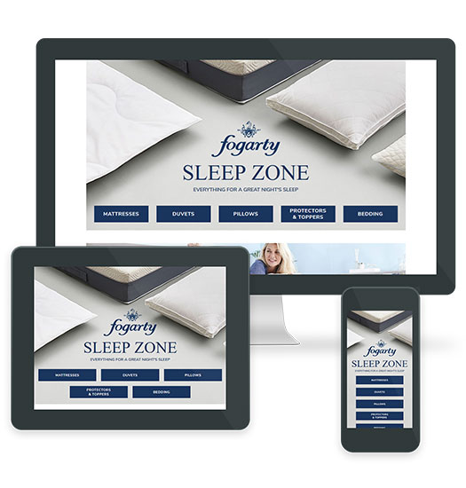

Fogarty
Fogarty is a sub-brand of Dunelm that specialises in quality, affordable bedding.
This project required a brand new journey to be designed in order to showcase some of the new product photography and unique selling points across the Fogarty range.
The 'Fogarty Sleep Zone' was split into five categories offering tabbed sub-categories within them. This was all built from scratch using HTML/CSS, and utilised jQuery to load in and out the required sub-categories via the interactive tabs.
Live Demo

Skills/Tools Used
Photoshop / Ilustrator / UI Design / UX Design / Responsive Web Design / Brand Guidelines / HTML5 / CSS3 / CMS / jQuery / User Testing / Device Testing / Photography Shoot Liaison / Team Management